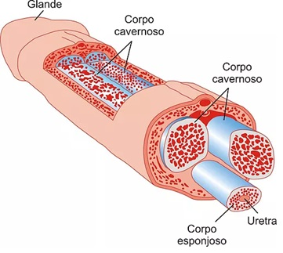
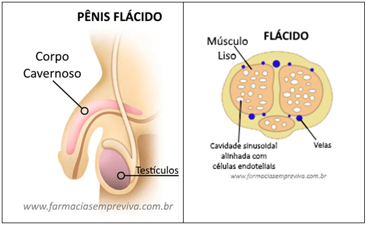
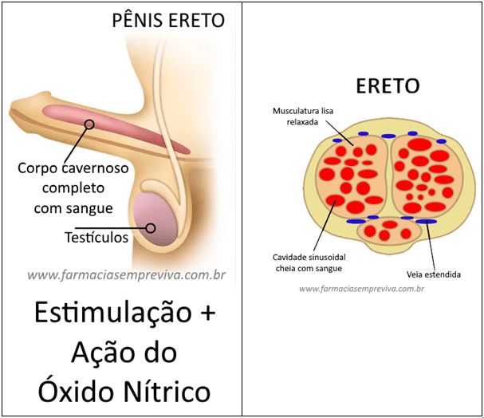

FUNÇÃO
O pênis é o órgão de cópula masculino, responsável por grande parte do prazer sexual e condutor do sêmen e urina, ou seja, pertence tanto ao sistema reprodutor quanto ao excretor.
COMO FUNCIONA?
O pênis é um órgão em formato cilíndrico, dividido em 3 partes: raiz (ou base), corpo e glande. A raiz é responsável pela sustentação do pênis, sendo composta por músculos encontrados na cavidade abdominal, que se estendem até o corpo do pênis e formam cilindros.
O tecido erétil do pênis é composto por esses cilindros. São eles: dois corpos cavernovos e um corpo esponjoso, cujos interiores possuem espaços vascularizados. O corpo esponjoso contém menos tecido erétil que os corpos cavernosos, e possui uma dilatação em sua extremidade denominada glande.
A base da glande é arrendodada e possui pequenas glândulas que secretam esmegma, uma substânica sebácea que atua como lubrificante. A glande é coberta por uma camada de pele retrátil denominada prepúcio, cuja função é proteger a glande. Na ponta da glande se encontra a abertura da uretra esponjosa. A glande também possui a maior parte das terminações nervosas sensitivas do pênis, e portanto, é a região mais sensitiva deste órgão.
EREÇÃO E EJACULAÇÃO
Durante a ereção, impulsos parassimpáticos relaxam o músculo liso dos corpos cavernosos, resultando numa dilatação dos vasos arteriais. A expansão dos corpos cavernosos oclui as veias presentes no tecido erétil (mecanismo oclusivo interno), impedindo o retorno do sangue venoso.
 A ejaculação é o ápice do estímulo sexual, sendo dividida em duas fases: primeiramente, impulsos simpáticos contraem o epidídidimo, ducto deferente, vesículas seminais e próstata, para que assim estes órgãos secretem seus respectivos conteúdos na uretra. Então, a uretra prostática e a raíz peniana se contraem, propulsionando e expelindo o sêmen (conjunto de espermatozóides e flúidos seminais) através de toda a extesão da uretra.
A ereção pode ocorrer tanto por estímulos sensorias do pênis, quanto visuais, imaginários e olfativos, e existem três tipos de ereção: psicogênica, reflexogênica e noturna. A ereção psicogênica é causada por estimulos psíquicos e audiovisuais, enquanto a ereção reflexogênica advém da estimulação física da região genital. Já a ereção noturna ocorre durante o sono, na fase Rapid Eyes Movement (REM). O pênis possui uma inervação autonônoma e somática, que adentram o tecido erétil.